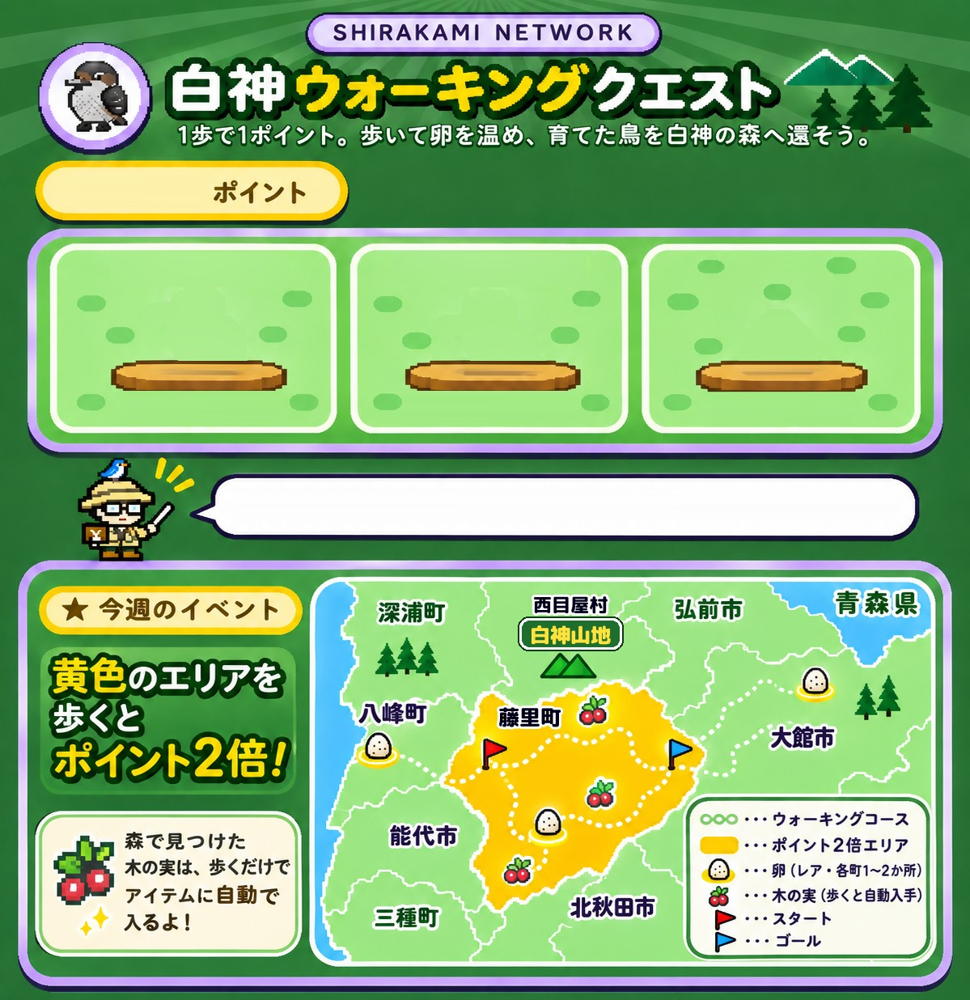

・ふだんは1歩で1ポイント。イベントの町の中で歩くと、1歩で2ポイントになります。
・「巣」タブの歩数計をONにすると、位置情報から今いる町を判定します。
・ヘルスケアから入れた歩数は、どこで歩いたか分からないので1倍です。
画面を開いたまま歩くと、スマホの動きから歩数を数えます。
ヘルスケアやGoogle Fitの「今日の合計歩数」を入れると、前回からふえた分だけ加算されます。
ビジターセンターの近くでチェックインすると、白神の特別な卵がもらえます。
・還した鳥は、足環つきで図鑑に残ります。
・留鳥と夏鳥は、次の繁殖期（4月）にペアで戻って卵を産みます。
・クマゲラを還すと森に巣穴ができ、フクロウの卵が見つかるようになります。
・10羽還して森がにぎやかになると、チェックインでイヌワシの卵が出ることがあります。
・冬鳥は北へ見送ると、次の冬にまた餌台へ来てくれます。
絵と種名の対応は仮のものです。